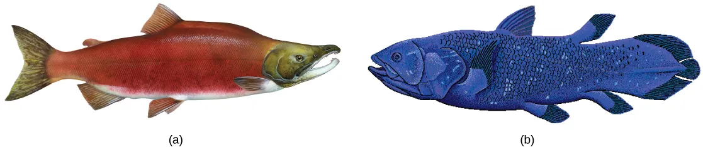
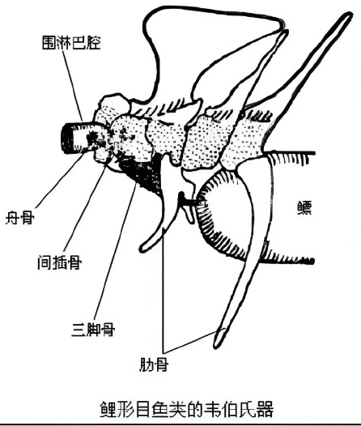

硬骨鱼纲
硬骨鱼纲是现代鱼类中 种类最多（占鱼类 90% 以上，约 21000 多种）、分布最广的一纲，淡水或海洋生活。其骨骼一般为 硬骨。
硬骨鱼纲主要特征：
- 骨骼：硬骨，骨化程度高；
- 口与鼻孔：口多为端位，内鼻孔有或无（内鼻孔是鼻腔连通口腔的开口，将进化成陆生脊椎动物肺呼吸的气体通道）；
- 鳞片：体被 硬鳞、圆鳞、栉鳞 或裸露无鳞；
- 尾型：大多为 正型尾；
- 鳃：鳃裂 4 对，外有骨质 鳃盖骨 保护（内鳃），鳃间隔退化甚至消失；
- 鳔：多数有鳔或"肺"；
- 肠：多数无螺旋瓣，无泄殖腔（肛门和泄殖孔分别开口）；
- 循环：低等类群有动脉圆锥，真骨鱼有 动脉球；
- 生殖：雄性 无鳍脚；生殖腺外膜延伸成生殖导管；大多体外受精和体外发育，少数卵胎生。

一、硬骨鱼纲的分类
硬骨鱼纲按偶鳍结构、内鼻孔有无分为两个 亚纲：
也有学者主张将肉鳍亚纲中的总鳍鱼总目和肺鱼总目升级为亚纲，因而分 三个亚纲：总鳍鱼亚纲、肺鱼亚纲、辐鳍鱼亚纲。
二、肉鳍亚纲（内鼻孔亚纲）Sarcopterygii
肉鳍亚纲具 内鼻孔；偶鳍呈 肌肉质的桨状（肉鳍），骨骼形态与陆生脊椎动物四肢骨相似。包括总鳍鱼和肺鱼，是 两栖类的祖先类群。
（一）总鳍鱼亚纲（总鳍鱼总目）
古老的原始硬骨鱼类，发达的脊索仍是主要中轴骨骼，未形成椎体；头下具一对喉板；偶鳍呈肌肉质桨状，骨骼形态与陆生四肢骨相似。
出现于 泥盆纪，繁盛于古生代。早期生活于淡水，能用鳔呼吸空气，可凭借发达肉质偶鳍在潮湿陆地上缓慢爬行；二叠纪后转入海洋，鳔消失。人们认为两栖类由古代总鳍鱼进化而来。
现存唯一物种——矛尾鱼（活化石）：
- 体长可达 2 m，体重可达 80 kg；
- 头部每侧各有 3 个鼻孔，有喷水作用；
- 鳍肌肉质，尾鳍呈特殊的 三叶式矛头尾；
- 体被圆鳞；无鳔，无内鼻孔（次生性外移而在口腔中消失），无鳃盖；
- 肠具螺旋瓣，动脉圆锥发达，肉食性，卵胎生。
（二）肺鱼亚纲（肺鱼总目）
硬骨鱼中原始的、一直生活在淡水中的鱼类。现存三个属：非洲肺鱼、美洲肺鱼、澳洲肺鱼。
主要特征：
- 具 内鼻孔；偶鳍呈肌肉质桨状；原型尾；
- 大部分骨骼为软骨，发达的脊索终生存在，无椎体；
- 体被覆瓦状圆鳞；肠具螺旋瓣；有动脉圆锥；
- 有 鳔和内鳃，鳔通过鳔管与食管相通，在陆地上能行使肺的功能（尤其非洲肺鱼和美洲肺鱼能离开水生活一段时间）。
三、辐鳍亚纲 Actinopterygii
现代鱼类中 种类最多的亚纲，占现代鱼类种类总数 90% 以上，已知 21000 多种。
主要特征：各鳍均由 真皮性的辐射状鳍条 支持；体被骨质圆鳞、栉鳞或裸露无鳞；无内鼻孔；无泄殖腔，以肛门和泄殖孔分别开口；骨骼骨化程度高。
本亚纲分三个 总目：硬鳞总目、全骨总目、真骨总目（也有学者按 9 个总目分类）。
（一）硬鳞总目（最原始）
脊索终生存在，骨骼尚未骨化为硬骨，无椎体；体被 硬鳞；有喷水孔；心脏具动脉圆锥；肠内有螺旋瓣；歪型尾或原尾型。
本总目是辐鳍亚纲最原始类群，古生代占主要地位，仅少数存留。我国代表：中华鲟（鲟形目鲟科），在长江上游金沙江一带产卵孵化后返回海里成长。
（二）全骨总目（过渡型）
也称硬骨硬鳞总目。硬骨较发达，椎体后凹型；体被硬鳞或圆鳞；无喷水孔；鳃间隔退化；肠螺旋瓣和动脉圆锥 退化；鳔可呼吸空气；微歪型尾。
中生代繁盛，现仅存极少数种类（如雀鳝、弓鳍鱼）。
（三）真骨总目（最高等，最繁盛）
骨化程度高，有完全的脊椎，双凹型椎体发达；体被圆鳞或栉鳞；鳃间隔消失或基本消失；具动脉球（无动脉圆锥）；肠无螺旋瓣；正型尾。
本总目包括约 96% 的现存鱼类，是硬骨鱼纲的绝对主体。
典型类群与经济鱼类：
- 鲱形目：被圆鳞，无侧线；背鳍一个，腹鳍腹位，各鳍无棘；有鳔管，鳃耙长密，多食浮游生物。代表：鲱鱼、鲥鱼、鳓鱼。
- 鲤形目：具韦伯氏器，鳔管通食管。代表：四大家鱼（青、草、鲢、鳙）、鲤鱼、鲫鱼。注意：四大家鱼中鲢、鳙属鲤科。
- 其它真骨鱼：大麻哈鱼、黄鳝、带鱼、大黄鱼、小黄鱼等。

| 特征 | 硬鳞总目（中华鲟） | 全骨总目（雀鳝） | 真骨总目（鲤/鲈） |
|---|---|---|---|
| 脊索/椎体 | 脊索存在，无椎体 | 椎体后凹型 | 椎体发达（双凹型） |
| 骨化程度 | 低（多软骨） | 较高 | 高 |
| 鳞片 | 硬鳞 | 硬鳞或圆鳞 | 圆鳞或栉鳞 |
| 喷水孔 | 有 | 无 | 无 |
| 鳃间隔 | — | 退化 | 消失/基本消失 |
| 动脉圆锥/球 | 动脉圆锥 | 动脉圆锥退化 | 动脉球（无动脉圆锥） |
| 肠螺旋瓣 | 有 | 退化 | 无 |
| 尾型 | 歪尾或原尾 | 微歪尾 | 正尾 |
| 演化地位 | 最原始 | 过渡 | 最高等(96%现存鱼) |
硬骨鱼纲核心记忆点
- 硬骨鱼 = 硬骨 + 口端位 + 硬鳞/圆鳞/栉鳞 + 正尾 + 鳃盖(内鳃) + 鳃间隔退化 + 有鳔 + 无泄殖腔 + 体外受精。
- 两大亚纲：肉鳍亚纲（总鳍鱼-矛尾鱼、肺鱼-具内鼻孔+肉质偶鳍+鳔可呼吸，两栖类祖先）和辐鳍亚纲（辐射鳍条+无内鼻孔）。
- 辐鳍三总目递进：硬鳞总目（中华鲟，最原始，硬鳞+歪尾+螺旋瓣+动脉圆锥）→ 全骨总目（雀鳝，过渡）→ 真骨总目（96%现存鱼，动脉球+无螺旋瓣+正尾，含四大家鱼）。
- 矛尾鱼：活化石，总鳍鱼现存唯一，三叶矛头尾，卵胎生，无鳔无内鼻孔。
- 肺鱼：鳔=肺，三属（非洲/美洲/澳洲），非洲肺鱼夏眠茧。
- 四大家鱼：青、草、鲢、鳙（鲤形目，具韦伯氏器）。